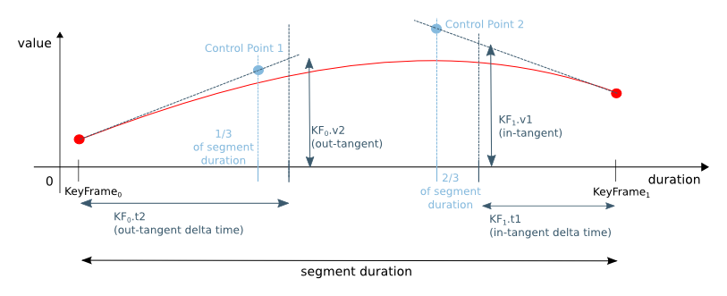

interpolate methods, which are
used to calculate interpolated values. Various built-in implementations of
this class are offered. Applications may choose to implement their own
Interpolator to get custom interpolation behavior.
A custom Interpolator has to be defined in terms of a "
curve()".
- Since:
- JavaFX 2.0
-
Field Summary
FieldsModifier and TypeFieldDescriptionstatic final InterpolatorBuilt-in interpolator that provides discrete time interpolation.static final InterpolatorBuilt-in interpolator instance that provides ease in/out behavior.static final InterpolatorBuilt-in interpolator instance that provides ease in behavior.static final InterpolatorBuilt-in interpolator instance that provides ease out behavior.static final InterpolatorBuilt-in interpolator that provides linear time interpolation. -
Constructor Summary
Constructors -
Method Summary
Modifier and TypeMethodDescriptionprotected abstract doublecurve(double t) Mapping from [0.0..1.0] to itself.booleaninterpolate(boolean startValue, boolean endValue, double fraction) This method takes twobooleanvalues along with afractionbetween0.0and1.0and returns the interpolated value.doubleinterpolate(double startValue, double endValue, double fraction) This method takes twodoublevalues along with afractionbetween0.0and1.0and returns the interpolated value.intinterpolate(int startValue, int endValue, double fraction) This method takes twointvalues along with afractionbetween0.0and1.0and returns the interpolated value.longinterpolate(long startValue, long endValue, double fraction) This method takes twointvalues along with afractionbetween0.0and1.0and returns the interpolated value.interpolate(Object startValue, Object endValue, double fraction) This method takes twoObjectsalong with afractionbetween0.0and1.0and returns the interpolated value.static InterpolatorSPLINE(double x1, double y1, double x2, double y2) Creates anInterpolator, whichcurve()is shaped using the spline control points defined by (x1,y1) and (x2,y2).static InterpolatorCreates a tangent interpolator, for which in-tangent and out-tangent are identical.static InterpolatorCreate a tangent interpolator.
-
Field Details
-
DISCRETE
Built-in interpolator that provides discrete time interpolation. The return value ofinterpolate()isendValueonly when the inputfractionis 1.0, andstartValueotherwise. -
LINEAR
Built-in interpolator that provides linear time interpolation. The return value ofinterpolate()isstartValue+ (endValue-startValue) *fraction. -
EASE_BOTH
Built-in interpolator instance that provides ease in/out behavior.An ease-both interpolator will make an animation start slow, then accelerate and slow down again towards the end, all in a smooth manner.
The implementation uses the algorithm for easing defined in SMIL 3.0 with an acceleration and deceleration factor of 0.2, respectively.
-
EASE_IN
Built-in interpolator instance that provides ease in behavior.An ease-in interpolator will make an animation start slow and then accelerate smoothly.
The implementation uses the algorithm for easing defined in SMIL 3.0 with an acceleration factor of 0.2.
-
EASE_OUT
Built-in interpolator instance that provides ease out behavior.An ease-out interpolator will make an animation slow down toward the end smoothly.
The implementation uses the algorithm for easing defined in SMIL 3.0 with an deceleration factor of 0.2.
-
-
Constructor Details
-
Interpolator
protected Interpolator()The constructor ofInterpolator.
-
-
Method Details
-
SPLINE
Creates anInterpolator, whichcurve()is shaped using the spline control points defined by (x1,y1) and (x2,y2). The anchor points of the spline are implicitly defined as (0.0,0.0) and (1.0,1.0).- Parameters:
x1- x coordinate of the first control pointy1- y coordinate of the first control pointx2- x coordinate of the second control pointy2- y coordinate of the second control point- Returns:
- A spline interpolator
-
TANGENT
Create a tangent interpolator. A tangent interpolator allows to define the behavior of an animation curve very precisely by defining the tangents close to a key frame. A tangent interpolator defines the behavior to the left and to the right of a key frame, therefore it is only useful within aTimeline. If used in aKeyFrameafter a KeyFrame that has different interpolator, it's treated as if the out-tangent of that KeyFrame was equal to the value in the KeyFrame.
The parameters define the tangent of the animation curve for the in tangent (before a key frame) and out tangent (after a key frame). Each tangent is specified with a pair, the distance to the key frame and the value of the tangent at this moment.
The interpolation then follows a bezier curve, with 2 control points defined by the specified tangent and positioned at 1/3 of the duration before the second KeyFrame or after the first KeyFrame. See the picture above.
- Parameters:
t1- The delta time of the in-tangent, relative to the KeyFramev1- The value of the in-tangentt2- The delta time of the out-tangent, relative to the KeyFramev2- The value of the out-tangent- Returns:
- the new tangent interpolator
-
TANGENT
Creates a tangent interpolator, for which in-tangent and out-tangent are identical. This is especially useful for the first and the last key frame of aTimeline, because for these key frames only one tangent is used.- Parameters:
t- The delta time of the tangentv- The value of the tangent- Returns:
- the new Tangent interpolator
- See Also:
-
interpolate
This method takes twoObjectsalong with afractionbetween0.0and1.0and returns the interpolated value.If both
ObjectsimplementNumber, their values are interpolated. IfstartValueimplementsInterpolatablethe calculation defined ininterpolate()is used. If neither of these conditions are met, a discrete interpolation is used, i.e.endValueis returned if and only iffractionis1.0, otherwisestartValueis returned.Before calculating the interpolated value, the fraction is altered according to the function defined in
curve().- Parameters:
startValue- start valueendValue- end valuefraction- a value between 0.0 and 1.0- Returns:
- interpolated value
-
interpolate
public boolean interpolate(boolean startValue, boolean endValue, double fraction) This method takes twobooleanvalues along with afractionbetween0.0and1.0and returns the interpolated value.Before calculating the interpolated value, the fraction is altered according to the function defined in
curve().- Parameters:
startValue- the first data pointendValue- the second data pointfraction- the fraction in[0.0...1.0]- Returns:
- the interpolated value
-
interpolate
public double interpolate(double startValue, double endValue, double fraction) This method takes twodoublevalues along with afractionbetween0.0and1.0and returns the interpolated value.Before calculating the interpolated value, the fraction is altered according to the function defined in
curve().- Parameters:
startValue- the first data pointendValue- the second data pointfraction- the fraction in[0.0...1.0]- Returns:
- the interpolated value
-
interpolate
public int interpolate(int startValue, int endValue, double fraction) This method takes twointvalues along with afractionbetween0.0and1.0and returns the interpolated value.Before calculating the interpolated value, the fraction is altered according to the function defined in
curve().- Parameters:
startValue- the first data pointendValue- the second data pointfraction- the fraction in[0.0...1.0]- Returns:
- the interpolated value
-
interpolate
public long interpolate(long startValue, long endValue, double fraction) This method takes twointvalues along with afractionbetween0.0and1.0and returns the interpolated value.Before calculating the interpolated value, the fraction is altered according to the function defined in
curve().- Parameters:
startValue- the first data pointendValue- the second data pointfraction- the fraction in[0.0...1.0]- Returns:
- the interpolated value
-
curve
protected abstract double curve(double t) Mapping from [0.0..1.0] to itself.- Parameters:
t- time, but normalized to the range [0.0..1.0], where 0.0 is the start of the current interval, while 1.0 is the end of the current interval. Usually a function that increases monotonically.- Returns:
- the curved value
-